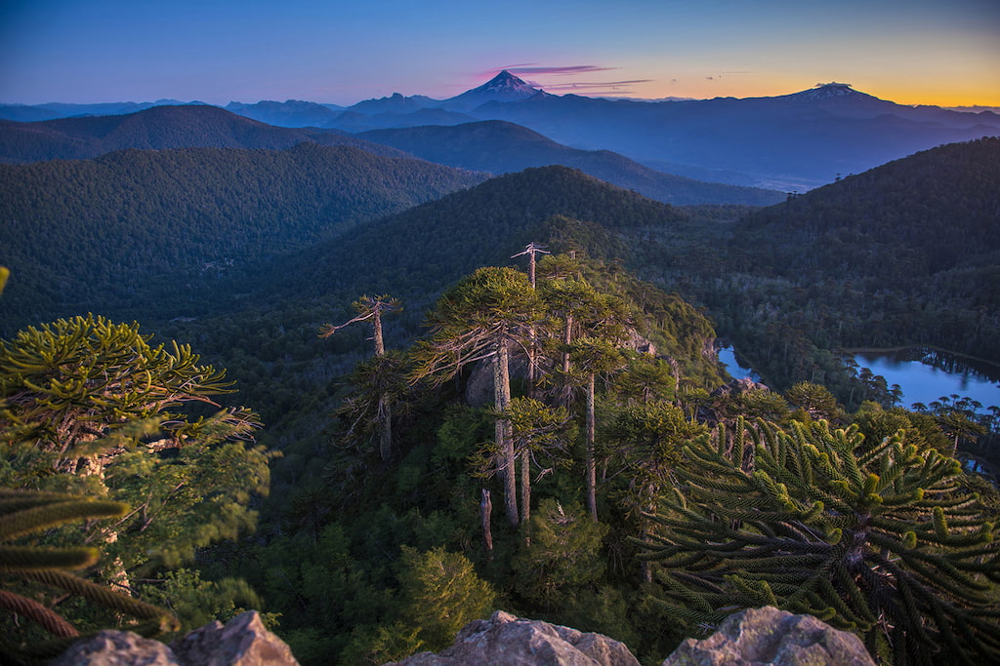
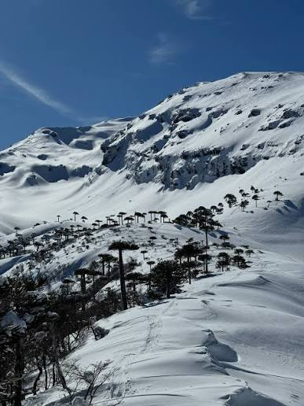
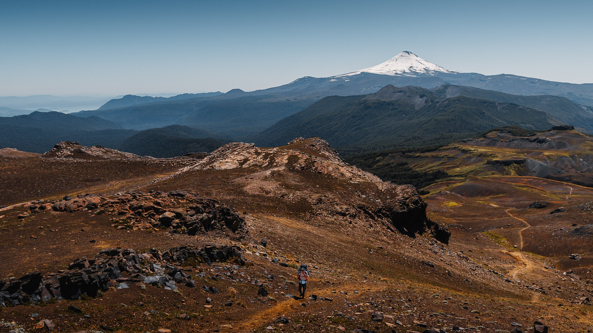

Reserva El Cañi
Mirador El Cañi
Distancia: 18 km
Ver detalleParque Nacional Villarrica

Reserva El Cañi
Distancia: 18 km
Ver detalle
Parque Nacional Conguillío
Distancia: 20 km
Ver detalle
Parque Nacional Villarrica
Distancia: 18 km
Ver detalle
Dificultad: Difícil
Travesía larga con subidas pronunciadas y terreno irregular. Una propuesta de ejemplo para representar una ruta exigente para personas con experiencia en senderismo.
Equipo básico
Protección
Hidratación
Abrigo